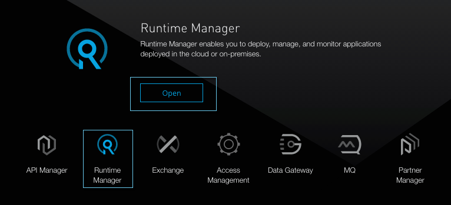
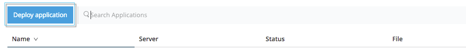
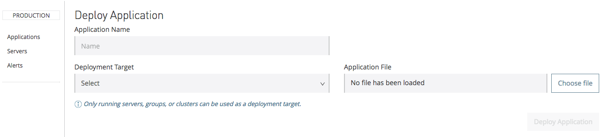
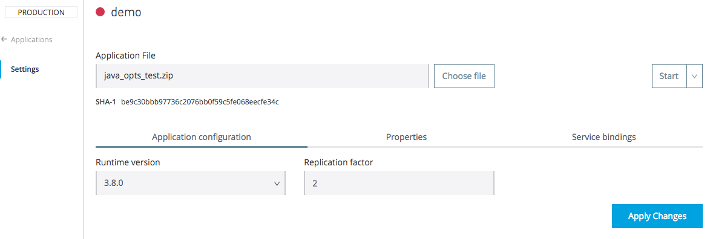

Deploying to Pivotal Cloud Foundry


If your local infrastructure includes Pivotal Cloud Foundry spaces, you can deploy Mule applications to virtual servers running on dynamically allocated local resources. See Deployment Strategies for a better understanding of how this works and its current limitations.
Through Pivotal Cloud Foundry, you can also deploy a proxy application that can mediate all of the traffic going to a non-Mule app, and through that apply runtime policies.
This page describes the options on the Deploy Application panel on the Runtime Manager UI on the Anypoint Platform Private Cloud Edition.
Accessing the Deploy Application Screen
To deploy an application:
-
Sign in to the Anypoint Platform or click Sign up on the sign on page.
-
Hover your mouse over the Runtime Manager icon and click on it, or click Open
 -
Click Deploy application:
 -
The Deploy Application page opens:

Creating an Application Name
Every application requires a unique application domain name. The application domain identifies your application in the Runtime Manager.
In the Deploy Application dialog, enter a unique application name. Valid names contain alphanumeric characters and dashes, and contain at most 42 characters. If the name is valid, the Runtime Manager alerts you whether it is available or already reserved by another user.
Deployment Target
The Deployment Target field lets you specify where you want to deploy your application:
-
On the Cloud Foundry
-
On an on-premises server, server group, or cluster
This document focuses on deploying to the Cloud Foundry, for more information on deploying to servers, server groups and clusters, see Deploying to Your Own Servers.
Application File
Upload a new file for deployment. Click the Choose file button, select your application file, and then click Open.
Note: The application file size limit is 90 MB.
Application Configuration
Runtime Version
Using the drop-down menu, select the Runtime version to which you to deploy:

|
Replication Factor
Through this field, you can set on how many instances to deploy your application. What each of these instances represents in terms of actual computing power is something that depends on your specific PCF configuration.
When assigning multiple instances to an application, all of your instances are accessed via a single load balancer. This load balancer is automatically created by PCF and distributes the incoming traffic amongst them.
| Note that if you want your multiple instances to communicate with each other as a cluster, you must bind them to a Hazelcast server. |
Properties Tab
You can also optionally specify properties that your application requires. This allows you to externalize important pieces of configuration which may switch depending on the environment in which you’re deploying. For example, if you’re using a Mule application in one environment, you might configure your database host to be localhost. But if you’re using it on a different environment, you might configure it to be an Amazon RDS server.
To add an application property, click the Properties tab then add a key/value pair to the text box using the following format:
-Dkey=value
The -D flag is required to indicate that this is as system property that can be recognized within a Mule application. After adding your property, click Apply Changes.
Overriding Properties
Just like with CloudHub and on-premise Mule runtime deployments, applications that you deploy to PCF can still bundle their own property placeholder or secure property placeholder files inside the deployable archive file. Mule substitutes these properties into the application when the application starts.
If you have any property names set in a mule-app.properties file inside your application or in bundled property placeholder files, then when your application is deployed, any entries in the Properties tab with the same name will override the matching value bundled with the application.
Service Bindings Tab
You can bind any external service you want to your deployment, and populate this binding with properties that are sent to this service. You could for example bind a database service to your deployment so that the (already existing) database server creates a database instance to match your deployed application. In that case, you’d probably need to send credentials to your database service, and you can send these through properties that are specific to that service binding.
On your Pivotal Operations Manager you can register different applications to make available as services. For example you can have multiple instances of Hazelcast or MySQL registering each to a different database server. Once these are registered, you’ll be able to see them displayed on the Runtime Manager UI when you open the Select a Service dropdown menu:
After selecting one, click the Add Service button. You can then add properties that are specific to the service.
Properties for Service Bindings
Just as in the Properties Tab, you can define key:value pairs for properties that are specific to the corresponding service. Keep in mind that the properties on this tab will only act on the scope of the given service, whilst the properties on the Properties Tab will act at a global level over the full deployment.
Binding to Hazelcast
If you’re deploying your app to multiple instances (by setting the Replication Factor field) and you want these instances to communicate with each other as a cluster, you must bind them to a Hazelcast service (or several, one service per Hazelcast instance).
You must first make the service available, by following the steps in To Configure a Mule Hazelcast Server.
Once it’s available, you should be able to see it on a drop down in the [Service Binding Tab] and you can simply bind your application to this service through the UI. Remember to bind the application to all of the Hazelcast node services you need.
The Mule buildPack will automatically recognize the binding between the Mule application and the Hazelcast cluster and will start the Mule server in cluster mode.
To scale Mule applications that are already deployed, just set the Replication Factor field. The new Mule nodes will be binded to the same services as the rest. Take into account that by scaling your Mule application you could be imposing too much on your Hazelcast cluster and might have to scale that as well.
Verify Successful Binding
To verify that your service binding was successful, tail the logs of the application after pushing it to PCF and you should find similar entries in the log:
INFO 2016-09-30 16:11:34,430 [WrapperListener_start_runner] com.mulesoft.mule.cluster.hazelcast.HazelcastManager: Configuring cluster in client mode INFO 2016-09-30 16:11:34,430 [WrapperListener_start_runner] com.mulesoft.mule.cluster.hazelcast.HazelcastManager: Configuring cluster with custom hazelcast client configuration INFO 2016-09-30 16:11:34,430 [WrapperListener_start_runner] com.mulesoft.mule.cluster.hazelcast.HazelcastManager: Hazelcast cluster nodes: 127.0.0.1:5701 INFO 2016-09-30 16:11:34,430 [WrapperListener_start_runner] com.mulesoft.mule.cluster.hazelcast.HazelcastManager: Hazelcast cluster id: #hazelcastClusterId# INFO 2016-09-30 16:11:34,443 [WrapperListener_start_runner] com.mulesoft.mule.cluster.hazelcast.HazelcastClientInstanceBuilder: Configuring cluster nodes 127.0.0.1:5701 INFO 2016-09-30 16:11:34,481 [WrapperListener_start_runner] com.hazelcast.core.LifecycleService: HazelcastClient[hz.client_0_clusterOnAmazonHazelcast][3.6.2] is STARTING INFO 2016-09-30 16:11:34,724 [WrapperListener_start_runner] com.hazelcast.core.LifecycleService: HazelcastClient[hz.client_0_clusterOnAmazonHazelcast][3.6.2] is STARTED INFO 2016-09-30 16:11:34,812 [hz.client_0_clusterOnAmazonHazelcast.user-1] com.hazelcast.core.LifecycleService: HazelcastClient[hz.client_0_clusterOnAmazonHazelcast][3.6.2] is CLIENT_CONNECTED
Deployment Execution
After you complete the above steps, click Create and PCF creates the necessary virtual resources, loads an image onto them that includes a Mule Runtime instance and then deploys your application to this Mule Runtime.
| This step might take several minutes, as PCF needs to first instance the images. |
When deployment is complete, the application status indicator changes to green and you are notified in the logs that the application has deployed successfully. Here’s what is in the logs:
Successfully deployed [mule application name]
Configuring a Deployed Application
All of the settings discussed in the steps above can be edited once the application is already deployed. To do so you must:
-
In the Applications tab, select an application entry and click Manage Application:

-
You should now see the Settings tab for the application:

Auto-Deploy a Proxy from API Manager
If you want to register an API in API Manager for an application that isn’t developed as a Mule application, you can do this through the command line.
This creates a simple Mule application that works as a proxy, and that’s automatically registered both in the Runtime Manager and in the API Manager. Through the API Manager, you can apply policies and view usage data.
See Setting Up a Proxy.
Deployment Errors
If an error occurs and the application cannot be deployed, the application status indicator changes to Failed. You are alerted in the status area that an error occurred. Check the log details for any application deployment errors. You need to correct the error, upload the application, and deploy again.
See Also
-
Managing Deployed Applications contains general information about how to manage your application once deployed
-
Monitoring Applications shows you how you can set up email alerts for whenever certain events occur with your application or workers
-
For information on deploying to servers, server groups and clusters, see Deploying to Your Own Servers.
-
Runtme Manager API for instructions on how to deploy through the API